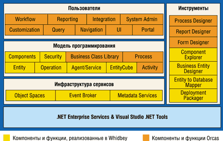

Андрей Колесов
В течение 2003 г. Microsoft представила на рынке целый ряд новых версий своих ключевых продуктов: набор серверных операционных систем Windows Server 2003 (см. "BYTE/Россия" No 5'2003), офисную платформу Microsoft Office System 2003 ("BYTE/Россия" No 12'2003), модернизированные варианты средства разработки Visual Studio .NET 2003 и среды .NET Framework 1.1. Заметно повысилась активность корпорации и в области мобильных систем ("BYTE/Россия" No 7'2003).
Все это уже выпущено, и хотя реальный процесс перехода на представленные продукты только-только начался, в целом ИТ-специалистам понятно, что их ожидает в течение ближайших года-двух. Но в условиях динамичного развития ИТ, на фоне повышения их роли в обеспечении непрерывности бизнеса, а также затрат на их внедрение и поддержку, крайне важным становится долгосрочное планирование развития ИТ-инфраструктуры предприятий с учетом появления новых продуктов и технологий - с перспективой как минимум на два-три года.
Конференция Microsoft (http://www.microsoft.com) для профессиональных разработчиков (Professional Developer Conference, PDC), проводимая ежегодно в конце октября, - одно из наиболее значительных публичных мероприятий корпорации, привлекающее внимание широкого круга специалистов, причем не только из стана пользователей технологий Microsoft. Ведь именно здесь анонсируются первые технические детали будущих продуктов корпорации, определяющие перспективы развития всей платформы Microsoft - то, с чем пользователи будут иметь дело через несколько лет. На этот раз конференция PDC'2003, прошедшая 27-30 октября в Лос-Анджелесе, дала мировому ИТ-сообществу хорошую почву для размышлений: здесь Microsoft впервые представила будущие версии таких ключевых продуктов, как ОС Windows (кодовое название Longhorn), СУБД SQL Server (Yukon) и инструмент разработки Visual Studio (Whidbey).
С ключевым докладом на PDC'2003, как обычно, выступил Билл Гейтс - основатель корпорации, стратегический руководитель и главный архитектор ее программных технологий. Анализируя тенденции развития ИТ, он отметил в первую очередь выросшую потребность в объединенных системах на основе Web-сервисов (PDC'2003 проходила под лозунгом Make the connection). Увеличение сложности реализуемых распределенных систем и ответственности задач, возлагаемых на них пользователями, существенно повышает требования к надежности и защищенности таких решений, а значит, и к базовым технологиям. Именно проблема безопасности должна стать определяющей в стратегии развития программных продуктов Microsoft. Перечисляя действия компании в этом направлении, Гейтс выразил надежду на появление в ближайшем будущем технологии защиты NGSCB, реализованной на уровне аппаратуры.
В то же время возможности взаимодействия с компьютером для пользователя должны постоянно расширяться с учетом растущей вычислительной мощности. Это, в частности, означает, что в диалоге пользователя с компьютерной системой нужно применять не только новые графические функции, но и качественно новые методы взаимодействия, такие, как речевое общение.
Именно на этих предпосылках строятся ключевые программные продукты Microsoft следующей волны, впервые представленные прошедшей осенью.
Longhorn
Самым главным событием PDC'2003 стало, конечно, публичное представление будущей версии операционной системы Longhorn. Это название впервые появилось в материалах Microsoft год назад, но из опубликованной до сих пор информации не было ясно, о чем идет речь - об очередном обновлении Windows или о создании ОС следующего поколения. Теперь все стало понятно - нас ожидает второй вариант.
Основу будущей ОС составит новая API-модель на базе архитектуры Microsoft .NET Framework, получившая название WinFX (рис. 1), - она придет на смену нынешней Win32. В цепочке эволюции программной модели операционных систем Microsoft предстоящий переход будет столь же радикальным, как переход от Win16 к Win32. Если до сих пор .NET Framework представляла собой промежуточную операционную среду, построенную на основе Win32, то теперь WinFX сама станет ее составной частью и будет реализована в виде специальных наборов библиотек классов с корневым именем System, среди которых сейчас выделены четыре основные группы функций.
| Рис. 1. Структура программной модели Longhorn.
|
Fundamentals (базовые). Реализуют функции ядра ОС, отвечающие за управление приложениями и оперативной памятью (Base & Application Services), безопасностью (Security), конфигурацией (Configuration), а также развертыванием и администрированием (Deployment/Management).
Presentation (визуализация, кодовое название Avalon). Графическая подсистема, реализованная в виде унифицированной архитектуры для представления пользовательского интерфейса, документов и мультимедиа.
Data (управление данными, WinFS). Новое средство управления файловой системой, построенное на основе стандартов XML и обеспечивающее безопасную и эффективную работу как со структурированными, так и с неструктурированными данными.
Communication (коммуникации, Indigo). Набор функций для построения и управления соединенными системами, реализованных на основе стандартов Web Services.
В ходе демонстрации Longhorn основное внимание уделялось, естественно, новым возможностям пользовательского интерфейса, за реализацию которого отвечает подсистема Avalon. Сразу нужно отметить принципиально новый дизайн окон, но за ним стоит не просто изменение стиля и цвета, а качественно иные технологии. Для управления экранным интерфейсом используется новый описательный язык разметки XAML (eXtensible Application Markup Language), реализованный на базе XML. По сути это те же динамические HTML-страницы, но только адаптированные под внутреннее применение в ОС.
Вот как, например, будет выглядеть код, выводящий на экран окно (рис. 2) с тремя квадратами, которые меняют цвет (с красного на зеленый) при перемещении курсора мыши.
| Рис. 2. Пример простейшего XAML-приложения.
|
<!-- Window1.xaml -->
<Window
xmlns="http://schemas.microsoft.com
/2003/xaml"
xmlns:def="Definition"
def:Class="Application3.Window1"
Text="My Three Rectangles">
<FlowPanel>
<FlowPanel.Resources>
<Style>
<Rectangle Fill="Red" Width=
"150" Height="100" Margin="10" />
<Style.VisualTriggers>
<PropertyTrigger Property=
"IsMouseOver" Value="true">
<Set PropertyPath="Fill"
Value="Green"/>
</PropertyTrigger>
</Style.VisualTriggers>
</Style>
</FlowPanel.Resources>
<Rectangle />
<Rectangle />
<Rectangle />
</FlowPanel>
</Window>
|
Сам интерфейс теперь будет строиться на базе векторной графики, что позволяет, например, создавать окна произвольной конфигурации с произвольным же углом наклона. Для диалога с компьютером можно использовать речевой ввод команд. Впечатляет и режим работы в сети, когда на одном локальном компьютере вы видите в отдельном окне точное отображение экрана монитора другого компьютера в реальном масштабе времени.
Для доступа к данным можно применять не только традиционное перемещение по каталогам, но и иерархию объектов, объединяющих файлы не по месту хранения, а по их смысловому содержанию. В частности, пользователь сможет получить в окне список всех DOC-файлов, хранимых на диске, потом выбрать из них только файлы, созданные за определенный промежуток времени, и т. д. Решение подобной задачи упрощается за счет новых возможностей WinFS, в которой все файлы будут иметь набор метаданных, обеспечивающих автоматическое определение логических взаимосвязей между ними. По утверждениям представителей Microsoft, в Longhorn должны быть существенно улучшены такие критичные функции, как предотвращение конфликтов драйверов и приложений, оптимизация управления памятью и т. п.
Несмотря на такую революционность представленных изменений в программной модели Longhorn, в ней будет обеспечена совместимость с предыдущими ОС Microsoft. Для доказательства этого утверждения на конференции в среде новой ОС была запущена электронная таблица VisiCalc двадцатилетней давности, работающая в текстовом режиме DOS.
Планы выпускаLonghorn была представлена на PDC'2003 в виде прототипа (Technical Preview), т. е. набор будущих функций еще не полон, а уже созданные могут быть изменены. О дальнейших планах касательно новой ОС пока говорится только, что появления ее (а также Visual Studio Orcas) на рынке можно ожидать в 2005 г. Yukon и Whidbey представлены также в виде предварительных версий, но планы в их отношении более определенные. В начале следующего года должны выйти первые публичные бета-версии продуктов, а к его концу ожидается выпуск окончательных вариантов. |
Yukon и Whidbey
Второе по значимости объявление на PDC'2003 - следующая версия SQL Server под кодовым названием Yukon. Более детальный анализ возможностей новой СУБД еще впереди, поэтому пока ограничимся лишь формальным перечислением новшеств. В первую очередь нужно сказать, что Yukon построен на базовой технологии SQL Server 2000 с расширенной поддержкой стандартов XML и глубокой интеграцией со средой .NET Framework и инструментом разработки Visual Studio .NET. С точки зрения разработчиков следует отметить следующие основные новшества Yukon.
Расширенная поддержка языков программирования. Самое важное здесь то, что среда Common Language Runtime встроена непосредственно в ядро механизма СУБД. Соответственно разработчики могут писать хранимые процедуры, применяя как традиционный механизм Transact-SQL, так и различные .NET-языки, включая VB.NET и C#.
Интеграция с Visual Studio. Создание (в том числе и отладку) решений для Yukon можно выполнять непосредственно в среде VS. С помощью одного инструмента разработчики смогут применять различные технологии, в том числе Transact-SQL, XML, Multidimensional Expression (MDX), XML for Analysis (XML/A).
Модернизированные средства запросов. Возможности механизма запросов Transact-SQL существенно расширены. Однако наиболее важные изменения здесь связаны с применением управляемого .NET-кода, который предоставляет более простую и гибкую модель работы с данными, предлагая конструкции и функции, ранее недоступные SQL-разработчикам.
Применение XML и Web Services. Одно из главных направлений развития Yukon - поддержка естественных форматов данных, в первую очередь XML. Реализована расширенная поддержка открытых технологий, таких, как HTTP, XML, SOAP, XQuery, XPath и XSD. В состав СУБД входит целый ряд новых и модернизированных инструментов, в частности, XQuery Designer.
Расширенные возможности бизнес-аналитики. Новый набор средств Business Intelligence (они могут применяться и в SQL Server 2000) обеспечивает более эффективную реализацию задач сбора и аналитической обработки данных, в том числе для поддержки принятия решений, создания хранилищ информации, формирования отчетов и т. д.
Поддержка асинхронного взаимодействия. Новая технология SQL Server Service Broker позволяет внутренним или внешним процессам отправлять и получать асинхронные сообщения (с гарантированной доставкой), используя расширения обычного языка T-SQL.
Непосредственно с Yukon связана и следующая версия .NET-симбиоза - инструмента разработки Visual Studio и операционной среды .NET Framework под кодовым именем Whidbey. Помимо высокой интеграции с Yukon (в более ранних планах Microsoft этот продукт назывался VS for Yukon), в нем будут пополнены возможности всех основных языков программирования, расширена поддержка технологий ASP.NET и Web Services, получат развитие средства разработки офисных приложений. Будет также существенно переработан механизм создания готовых приложений MSBuild. В частности, для более гибкого управления процессом компиляции и компоновки будут применяться файлы формата на базе XML.
Предполагается также реализовать поддержку 64-разрядных процессоров и включить новую технологию под кодовым названием ClickOnce для развертывания приложений. Одновременно с выпуском Visual Studio Whidbey компания обещает выпустить набор инструментов (кодовое название Whitehorse) для визуального проектирования сервисно-ориентированных приложений и для управления ИТ-инфраструктурой.
Вместе с тем следует иметь в виду, что Yukon и Whidbey ориентированы на работу с операционными системами Windows, уже имеющимися сегодня на рынке. Специально под Longhorn будут создаваться новые варианты этих продуктов; в частности, известно, что уже ведется разработка инструмента Visual Studio следующего поколения для архитектуры WinFX под кодовым названием Orcas. В нем будут реализованы технология создания пользовательского интерфейса с управлением на базе XAML, новые наборы инструментов и конструкторов, улучшенная модель безопасности и поддержка новой модели хранения данных.
Контуры Microsoft Business Framework
Намерение Microsoft развивать направление бизнес-приложений очень серьезно изменило расстановку сил на рынке ERP-систем. Пока внешне деятельность корпорации выглядит как продвижение и некоторое развитие унаследованных систем: в Европе - Axapta и Navision, в США - Great Plains и Solomon. Однако очевидно, что, как бы долго ни обеспечивалась поддержка этих продуктов (а Microsoft обещает это делать как минимум до 2013 года), на смену им должны прийти новые унифицированные решения, построенные - это было изначально совершенно очевидно - на базе идеологии .NET Framework.
О том, что будущая бизнес-платформа будет называться Microsoft Business Framework (MBF), стало известно еще год назад, но информация о технических деталях и, самое главное, о сроках ее появления до широкой публики пока не доводилась. Тем временем в течение последних полутора лет Microsoft форсированными темпами провела интеграцию приобретенных компаний (Great Plains, Solomon, Navision) в свою корпоративную структуру, имеющую матричное строение. С одной стороны, Microsoft Business Solutions представляет собой отдельный брэнд (один из семи в корпорации). С другой - как самостоятельное и самодостаточное подразделение (как это было еще год назад) MBS уже фактически не существует: подавляющее число его основных функций - разработка, локализация, работа с партнерами - переданы в ведение соответствующих глобальных департаментов Microsoft. В сентябре Microsoft открыла партнерскую программу MBF Technology Adoption Program, в рамках которой 15 ведущих разработчиков ERP-решений получили возможность не только изучения новой платформы, но и разработки собственных продуктов на ее основе (в России из этих партнеров представлена только Scala Business Solutions).
С некоторыми дополнительными подробностями планов Microsoft в области бизнес-приложений удалось познакомиться в одном из докладов на конференции PDC'2003. В частности, стало известно, что первый публичный вариант платформы MBF должен появиться до конца 2004 г. одновременно с выходом следующих версий SQL Server/Yukon и Visual Studio/Whidbey.
Итак, MBF - это иерархический комплекс высокоуровневых программируемых объектов-абстракций, предназначенных для разработки и развертывания бизнес-приложений на основе распределенной сервис-ориентированной архитектуры (рис. 3). MBF реализован на базе библиотек классов .NET Framework и сам, в свою очередь, представляет собой расширение данной среды с базовым пространством имен Microsoft.BusinessFramework. Разработка бизнес-приложений выполняется в среде Visual Studio с помощью набора специализированных инструментов. Соответственно при этом можно использовать любые .NET-языки (VB.NET, C#, J# и т. п.), а также все объекты и функции .NET Framework. Команда разработчиков MBF входит в состав подразделения Visual Studio Development.
|  |
| Рис. 3. Программная модель Microsoft Business Framework будет реализована в двух последующих выпусках инструментария Visual Studio и среды .NET Framework - Whidbey и Orcas.
|
MBF реализован на базе так называемой предписывающей (prescriptive) архитектуры, когда логика взаимодействия объектов в значительной степени предопределяется выбором абстракций верхнего уровня. В то же время система представляет собой многоуровневый набор компонентов-образцов (patterns) для построения бизнес-слоев (микро-, низко- и высокоуровневая логика), а также для управления пользовательским интерфейсом.
В ходе презентации участникам PDC'2003 были продемонстрированы возможности создания бизнес-приложений на основе MBF на примере прототипа Visual Studio/Whidbey с использованием компонентов Entities (сущности), Operations (операции) и EntityCubes (аналитика).
MBF появится на рынке поэтапно в двух последующих версиях Visual Studio и .NET Framework. В Whidbey (2004 г.) будут реализованы базовые компоненты программной модели и инструменты. В Orcas (2005 г.) войдут расширенные сервисы, компоненты и инструменты (развитый пользовательский интерфейс, средства составления отчетов, поддержки бизнес-процессов и т. п.).
Весьма примечательно, что тема MBF рассматривалась на PDC'2003 на секции "Управление данными". Это позволяет предположить, что новая технология будет достаточно жестко привязана к СУБД Microsoft, в первую очередь к SQL Server версии Yukon.
Кроме обсуждения сугубо технических вопросов построения MBF, на презентации была приведена интересная схема будущей организации делового сотрудничества по продвижению новых технологий (рис. 4). Из нее видно, что партнерская сеть будет включать три вида компаний:
- ISV 1-го уровня - разработчики базовых бизнес-приложений, распространяемых по собственным каналам поставок;
- ISV 2-го уровня - разработчики специализированных расширений к базовым приложениям, интеграторы систем;
- VAR - компании, занятые внедрением решений и простыми доработками готовых приложений.
| Рис. 4. Предполагаемая схема взаимодействия Microsoft с партнерами и заказчиками по продвижению Business Solutions.
|
Как видно из схемы, предусматриваются следующие варианты поставок продуктов группам заказчиков. Для малых предприятий это будет приобретение готовых решений через VAR-партнеров либо у розничных продавцов. Для средних предприятий предполагается покупка решений с возможностью их доработки. Крупные предприятия, в дополнение к получению готовых решений, могут разрабатывать собственные приложения для внутреннего применения.
Любопытно, что собственно "чистая" платформа Microsoft Business Framework будет доступна лишь компаниям-разработчикам 1-го уровня, а также крупным корпоративным заказчикам. Все остальные могут использовать MBF только в рамках готовых базовых решений. Судя по всему, на сегодняшний день круг партнеров 1-го уровня в целом определен - это те самые 15 компаний, которые уже стали участниками MBF Technology Adoption Program.
Но тогда возникает естественный вопрос: в каком качестве видит себя в данной схеме сама Microsoft? Будет ли она поставлять готовые решения или ограничится созданием среды исполнения и средств разработки? Хотя уже известно, что Microsoft трудится над собственным бизнес-приложением под кодовым названием Green на базе MBF, смещение акцентов в пользу второго варианта представляется вполне вероятным.
Инициатива DSI
В прошедшем году Microsoft явно усилила внимание к решению задач управления программными ресурсами. В марте 2003 г. на встрече Microsoft Management Summit корпорация представила концепцию Dynamic Systems Initiative (DSI), которая предполагает внедрение автоматизированных средств управления конфигурацией в различные компоненты вычислительной инфраструктуры предприятия, включая операционные системы, приложения и сервисы. За прошедшее с тех пор время идея DSI получила определенные конкретные очертания; в частности, некоторые ее подробности были представлены на прошедшей в конце ноября в Москве конференции "Платформа 2004".
Главная направленность DSI заключается в объединении этапов разработки, развертывания и сопровождения приложений, причем особый акцент делается на поддержку обратной связи между ними. В целом эту идею трудно назвать новой, поскольку именно она составляет основу Application Life Management. Интересно же здесь то, что под реализацию своей концепции Microsoft намерена подвести технологическую базу в виде System Definition Model (SDM) с использованием XML-стандартов. Помимо решения задач конфигурирования, технология SDM нацелена на то, чтобы приложения имели возможность сами, изнутри контролировать свои процессы, и она будет тесно связана с Visual Studio. При этом предполагается, что технология SDM будет доступна и независимым разработчикам.
С архитектурой этой модели нужно еще разбираться, с тем чтобы позже продолжить ее обсуждение, но некие новые конкретные направления в развитии технологий масштаба предприятия уже обозначены довольно четко. Речь в первую очередь идет об ускоренной модернизации решений System Management Server и Microsoft Operations Manager, предназначенных соответственно для развертывания ПО и управления им в ходе эксплуатации, и о последующем объединении их в продукте System Center, который должен появиться в течение года-двух.
Виртуальные машины в исполнении Microsoft
Одна из заметных сегодня тенденций развития ИТ - повышение интереса заказчиков к программным технологиям "виртуальных машин" (VM). Эта концепция была еще в 70-е годы прошлого столетия реализована корпорацией IBM на своих мэйнфреймах System 360/370, в основном для поддержки работы различный версий ОС (в том числе устаревших на тот момент) в системах коллективного пользования.
Казалось бы, прогресс в области аппаратных средств сделал эту проблему неактуальной: гораздо проще пользоваться подходом "каждому экземпляру OC по выделенному компьютеру". Однако, как ни странно, именно с персональных ПК началось возрождение VM-технологий. Ведь одновременно с ростом числа версий клиентских ОС увеличивалось и число людей - разработчиков ПО, тестеров, специалистов технической поддержки, экспертов по софту, - которым в силу их профессии требовалось иметь на рабочей станции сразу несколько копий различных ОС. Наибольшую популярность в этой сфере получил продукт VMware Workstation компании WMware (http://www.vmware.com).
В последние два-три года технологии VM очень быстро начинают осваивать и серверные платформы, решая задачи обеспечения работоспособности унаследованных приложений, поддержки неоднородных вычислительных сред и оптимизации используемого оборудования (программная консолидация и виртуализация серверов). Та же компания VMware еще год назад представила свои серверные продукты GSX Server и ESX Server.
Нужно отметить, что в технологиях создания серверных виртуальных машин есть довольно много направлений, которые определяются спецификой и приоритетностью решаемых задач (например, необходимость использования разнородных ОС вступает в противоречие с требованием высокой производительности). Например, та же VMware делает акцент на поддержку широкого спектра ОС. А другой заметный игрок на этом рынке, российская компания SWsoft, в своем подходе ориентируется на оптимизацию управления вычислительными ресурсами на базе моносистем - Linux, FreeBSD (см. "Virtuozzo: решение для сервер-консолидации", "BYTE/Россия" No 12'2003).
В 2003 г. на поле VM-технологий появился еще один игрок - Microsoft. Корпорация пошла по традиционному пути, купив у компании Connectix (которая работала в этой области с 1988 г. и занимала здесь вторую позицию) ее технологию виртуальных машин для платформ Windows и Macintosh. В августе Connectix прекратила поставки продуктов Virtual PC for Windows 5.2 и Virtual PC for Mac 6.0, которые перешли в ведение Microsoft. А в конце 2003 г. корпорация выпустила новый продукт Microsoft Virtial PC 2004 (он пришел на смену прежнему варианту для Windows). В новом пакете в качестве основной ОС может использоваться Windows 2000 Professional или Windows XP, а гостевых - большинство x86-совместимых операционных систем, в том числе MS DOS, все версии Windows, IBM OS/2, Linux, Novell Netware. И это только первые "виртуальные" шаги Microsoft - в первом квартале 2004 г. корпорация обещает выпустить обновленный (также на базе технологий Connectix) пакет Virtual Server.